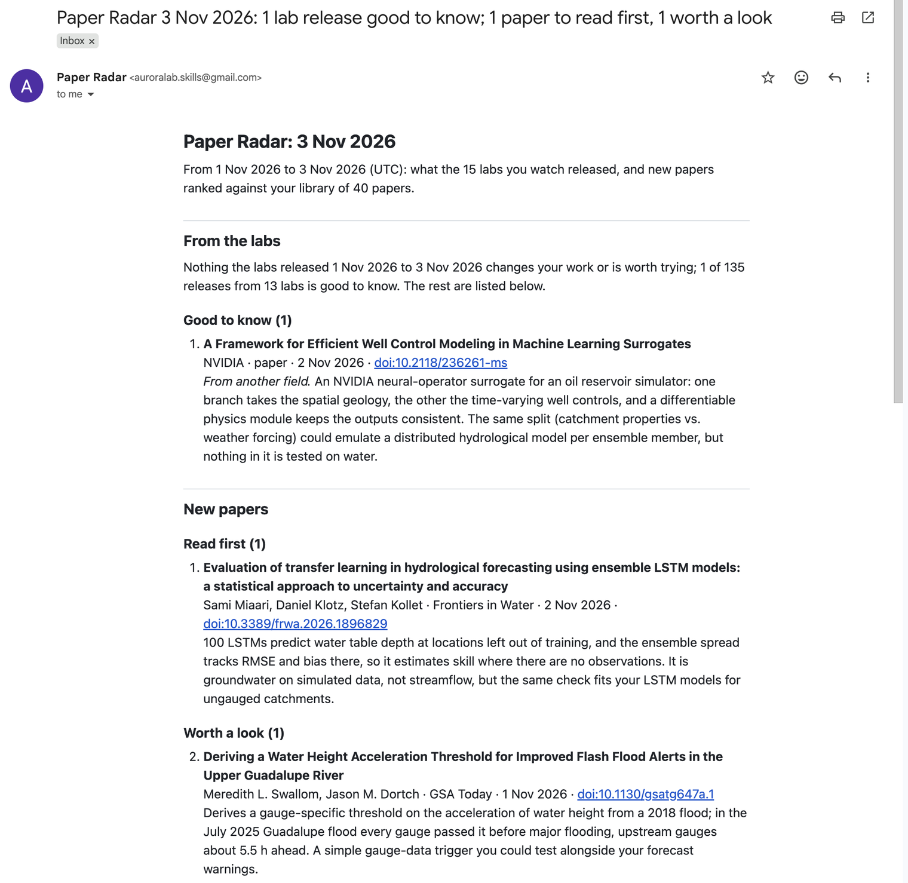
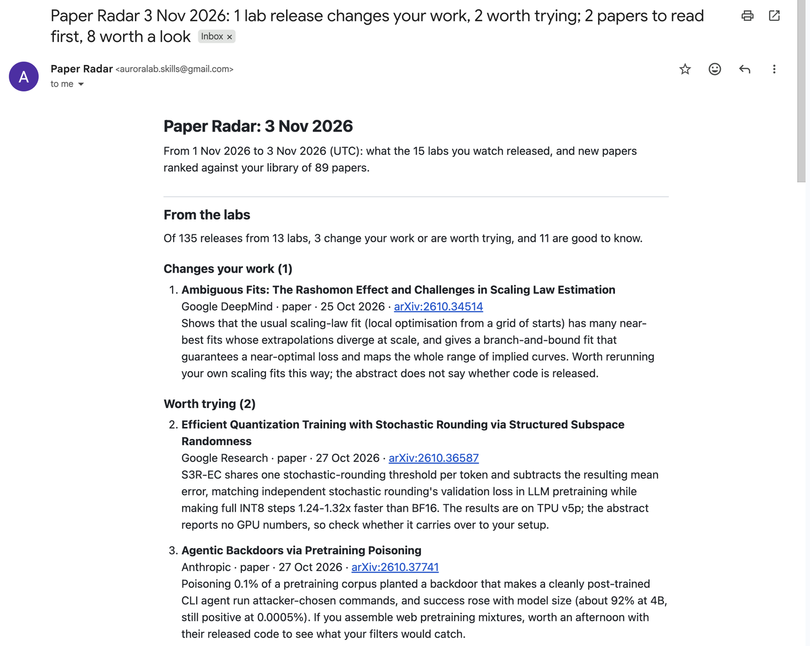

What arrives each morning
- From the labs. Blog posts, news, model releases, new code and the papers the labs led, from OpenAI, Google DeepMind, Google Research, Anthropic, Microsoft Research, NVIDIA, Meta, Mistral AI, DeepSeek, Alibaba (Qwen), Apple, Amazon, IBM Research, Ai2 and Hugging Face. Your agent sorts each into changes your work, worth trying, good to know or skip, with two sentences on why it matters to you, including ideas that carry over from another field. On most days, for most researchers outside AI, nothing the labs released matters, and the digest says so instead of padding.
- Papers for you. New papers from arXiv, bioRxiv/medRxiv and journals (through OpenAlex), ranked
against the papers in your own library (a
.bibfile or Zotero); your agent reads the closest abstracts and sorts them into read first, worth a look and on the edge, with a reason each. - New citations of your papers, each reported once, and retractions and corrections of papers you cite.
- Where you read. The whole digest by email, or its short form in Telegram or Slack, on a schedule: your Mac, a Linux machine, GitHub Actions, or a Claude Code routine with your computer off.
The agent is yours: Claude Code by default, on your own Claude plan. The kit fetches, ranks and delivers; your agent judges, following the skill that comes with it. Want a one-off list for a topic instead? The free paper-radar skill does that on demand.
A real morning
One morning, start to finish: the kit 1.0.0 installed from its wheel on Python 3.9, a flood-forecasting researcher's library of 40 published papers (hydrological models, ensemble weather forecasts, LSTM rainfall-runoff models), three sentences describing the work, and Claude Code as the agent. The library and the description are ours, standing in for a hydrologist's own; everything else is what the run fetched on 3 November 2026.
$ paper-radar-kit daily --no-send library 40 papers; window 2026-11-01 to 2026-11-03; arXiv -; 15 labs 35 new papers ranked (0 shown before) 135 lab releases from 13 labs agent: Claude Code is reading to-read.md ... agent: done (167 s) radar/2026-11-03/digest-2026-11-03.md digest-2026-11-03.md: 6 of 135 lab releases scored; 0 change your work, 0 worth trying, 1 good to know, 5 skipped digest-2026-11-03.md: 35 papers scored; 1 read first, 1 worth a look, 10 on the edge, 23 not for this researcher radar/2026-11-03/digest-2026-11-03.md (not sent: --no-send) $ paper-radar-kit send email: sent (to auroralab.skills@gmail.com): Paper Radar 3 Nov 2026: 1 lab release good to know; 1 paper to read first, 1 worth a look
Of the 135 releases from 13 labs that day, the agent kept one, as good to know and from another field: an NVIDIA neural-operator surrogate for an oil-reservoir simulator, whose split between fixed spatial inputs and time-varying controls could carry over to emulating a hydrological model for each ensemble member. It read 35 new journal papers and put one first: 100 LSTMs whose ensemble spread estimates their own skill at groundwater sites left out of training, a check that, as the agent noted, fits LSTM models for ungauged catchments.

The same morning for an AI researcher (the 89 references of a large-language-model paper as the library) looked very different. One lab release changed the work: a Google DeepMind paper showing that the usual way of fitting scaling laws hides near-best fits whose extrapolations diverge. Two were worth trying (INT8 training with structured stochastic rounding from Google Research; Anthropic's backdoors planted through pretraining data) and 11 good to know. Of 701 new arXiv papers, two were to read first, both on scaling, and eight worth a look; the agent found six of those eight by searching beyond the 40 closest abstracts. Its pass took 223 seconds. Open that digest or the flood-forecasting one, as the email reads.

How well it works
Both tests use papers a researcher later cited: did the kit put them in front of that researcher the week, or the day, they appeared? Each was measured once on a held-out set built and checked by someone who never ran the kit, after every setting had been fixed on separate development data. Intervals are 95% Wilson intervals.
From the labs
| Later-cited lab papers (16) | Your agent's digest | The ranking alone, same number of picks |
|---|---|---|
| In the digest (changes your work, worth trying, good to know) | 14 (88%, 95% CI 64–97%), median 2 picks a week | 12 |
| At "changes your work" or "worth trying" | 12 (75%, 51–90%), median 1 pick a week | 10 |
- 16 researchers in 14 fields (chemistry, ecology, plant genomics, journalism, HCI, nanophotonics, optics, memristive devices, phage genomics, biosecurity, oncology, information systems, statistics, networking, neuroscience, ML systems). For each, a lab paper they cited later, among the 39 to 151 papers the labs led that week; their library was their 12 most recent works and the works those cite. One Claude Sonnet agent per researcher followed the kit's skill, with no description of the researcher.
- The ranking alone put 13 of the 16 in the top 10% of their week (81%, 57–93%), against 8 for a keyword search built from the library. Half of the 16 come from another field than the researcher's library; 5 of those 8 reached "changes your work" or "worth trying".
- 16 papers is a small sample: the intervals are wide. 6 of the 16 are journal or conference versions of preprints from 6–18 months earlier; on the 10 that were new that week, the agent put 8 at "changes your work" or "worth trying".
- Blog posts, model releases and code have no record of who later used them, so they are not measured.
New papers
| Later-cited papers (61) | Paper Radar | Keyword search from the library | Random order |
|---|---|---|---|
| In the top 10% of that day's new papers | 47 (77%, 95% CI 65–86%) | 34 (56%) | 10% |
| In the top 10 of that day | 52 (85%, 74–92%) | 44 (72%) | 13.5 of 61 |
- 61 papers from 12 researchers, each ranked among every arXiv paper posted that day in the categories the kit watches for that researcher, with a library of what they had cited in their 12 most recent papers before that day.
- Most of these researchers work in fields with a few dozen new papers a day (high-energy and nuclear theory, gravitation, probability); the held-out set has only 7 papers from busy categories (hundreds a day), 4 of them in the top 10%. Fields that rarely cite fresh preprints could not be measured this way.
Delivery and a schedule
Delivery
- Email gets the whole digest, with a subject that says what matters. Gmail needs an app password, which needs 2-Step Verification with an authenticator app or a phone; any other provider's SMTP server works the same way.
- Telegram gets the short form (a one-line summary, the agent's tiers, notices and citations) and the whole digest as a file, through a bot you make with @BotFather in two minutes.
- Slack gets the short form through an incoming webhook (some workspaces need an administrator's approval for new apps).
Email was tested end to end through Gmail (the screenshots above). Telegram and Slack were tested against local stand-ins that follow their published APIs, not on live accounts.
A schedule
paper-radar-kit daily is one morning's run: fetch and rank, your agent's pass (Claude Code, allowed only
to read the run's files, write its scores and run the kit's show, find and digest),
then delivery. If the agent's pass does not finish, the digest says so at the top and the ranking's picks still go out;
if no source answers, you get a short note instead. One command, paper-radar-kit schedule <route>, sets up each route:
| Route | Runs on | Your agent's pass |
|---|---|---|
launchd | your Mac, while it is on (a missed time runs when it wakes) | Claude Code on your Mac, your Claude plan |
cron | a Linux computer that is on | the same |
github | GitHub Actions, in a private repository | a claude setup-token secret (your Claude plan) or an API key; without one, the ranking's picks |
cloud | a Claude Code routine in Anthropic's cloud, your computer off | the routine itself |
Run for real before release, November 2026: GitHub Actions in a private repository (about two minutes a run, the agent's pass under half a minute; the email arrived and the state was committed back); a Claude Code routine (two and a half minutes, the state pushed back); and a launchd job on a Mac (two and a half minutes, the agent's pass with the Mac's own Claude Code login, the email delivered; from inside the Documents folder macOS stopped the job, as the kit warns when you set it up). Two limits of routines showed up: their network lets only web traffic out, so a routine's digest goes by Telegram or Slack, not email; and GitHub's API answers only for the routine's own repository, so the labs' new GitHub repositories are not read there. The cron line comes from the same code as the launchd job, untried on a Linux machine.
Get it and start
On sale soon on Gumroad and Polar, $19 once: a zip with the Python wheel, a quickstart, the full guide, the agent skill and the licence terms. No licence key, no subscription.
pip install paper_radar_kit-1.0.0-py3-none-any.whl # Python 3.9+, nothing else installed
paper-radar-kit init # radar.ini: your .bib or Zotero, a few sentences on your research
paper-radar-kit library # reads your library, shows what will be watched
paper-radar-kit run # today's digest
paper-radar-kit setup skill # then ask Claude Code to "run the paper radar"
paper-radar-kit send --test # after choosing email, Telegram or Slack
paper-radar-kit schedule launchd # or cron, github, cloudWith the skill installed, you can also ask Claude Code to "set up my paper radar": it asks for your library, your
description and how you want the digest delivered. Keys (OpenAlex, your mail password, a bot token) stay in your
environment, a secrets.env only you can read, or your scheduler's secrets; never in the settings file.
What it sends where
- To the public sources (arXiv, OpenAlex, bioRxiv, Crossref): the categories and dates watched, and the DOIs and arXiv ids in your library, to fill in abstracts and check for notices. To the labs' sites, Hugging Face and GitHub: nothing but requests for their public feeds and listings.
- Your
.bibfiles, notes and PDFs never leave your machine. Your agent reads the day's reading list, which holds your description and your library's recent titles: with Claude Code, that reading goes to Anthropic like any other Claude Code session. - The digest goes only to the channels you set: your mail server, Telegram or Slack.
- Meta is covered through its Hugging Face models and its papers only, because ai.meta.com's robots.txt forbids automated collection; X is not read. Every request names the kit and is paced politely (arXiv: one every three seconds).
Limits
- Ranking is by words: a paper that describes your problem in other words ranks lower. Your agent's pass over the closest abstracts and the titles below them is there for that.
- Lab papers come from OpenAlex's affiliations, which lag days to weeks and are sometimes wrong (a side paper by a lab employee); the kit leaves out what it can recognise and your agent sets the rest aside.
- New citations come from OpenAlex: journal and conference papers within a day or two, preprints only when OpenAlex has their reference list.
- Your agent's judgments are only as good as what the sources say: it works from titles, descriptions and abstracts, and says when a record has none.
- A source that changes its feed can stop answering until an update; the digest names any source that did not answer.